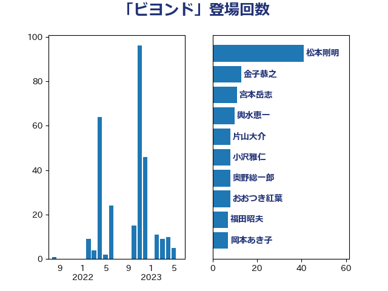

単語「ビヨンド」

| 武田良太 | 自由民主党 | 39 回 |
| 金子恭之 | 自由民主党 | 13 回 |
| 宮本岳志 | 日本共産党 | 10 回 |
| 岡本あき子 | 立憲民主党 | 9 回 |
| おおつき紅葉 | 立憲民主党 | 8 回 |
| 本村伸子 | 日本共産党 | 8 回 |
| 小沢雅仁 | 立憲民主党 | 7 回 |
| 柳ヶ瀬裕文 | 日本維新の会 | 7 回 |
| 藤川政人 | 自由民主党 | 6 回 |
| 松下新平 | 自由民主党 | 5 回 |
| 伊藤岳 | 日本共産党 | 4 回 |
| 橋本聖子 | 無所属 | 4 回 |
| 神谷裕 | 立憲民主党 | 4 回 |
| 丸川珠代 | 自由民主党 | 3 回 |
| 小林鷹之 | 自由民主党 | 3 回 |
| 藤井比早之 | 自由民主党 | 3 回 |
| 鈴木庸介 | 立憲民主党 | 3 回 |
| 鈴木淳司 | 自由民主党 | 3 回 |
| 和田政宗 | 自由民主党 | 2 回 |
| 守島正 | 日本維新の会 | 2 回 |
| 若松謙維 | 公明党 | 2 回 |
| 菅義偉 | 自由民主党 | 2 回 |
| 輿水恵一 | 公明党 | 2 回 |
| 中司宏 | 日本維新の会 | 1 回 |
| 中西祐介 | 自由民主党 | 1 回 |
| 井上信治 | 自由民主党 | 1 回 |
| 山口那津男 | 公明党 | 1 回 |
| 岸田文雄 | 自由民主党 | 1 回 |
| 沢田良 | 日本維新の会 | 1 回 |
| 浜口誠 | 国民民主党 | 1 回 |
| 滝波宏文 | 自由民主党 | 1 回 |
| 熊谷裕人 | 立憲民主党 | 1 回 |
| 田畑裕明 | 自由民主党 | 1 回 |
| 西岡秀子 | 国民民主党 | 1 回 |
| 足立康史 | 日本維新の会 | 1 回 |